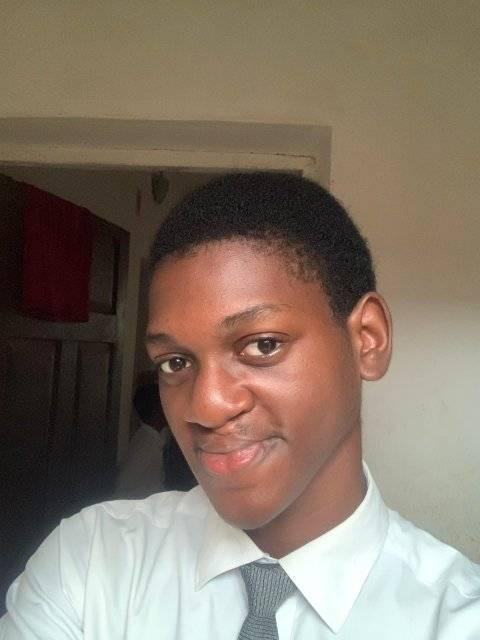

David Owolabi | WDD130
Hey there! I’m a Nigerian storyteller and digital artist who loves mixing words and visuals to spark your imagination. Whether I’m sketching out a new sci-fi world or whipping up a fun article, I’m all about sharing adventures and bringing ideas to life—let’s create something amazing together!